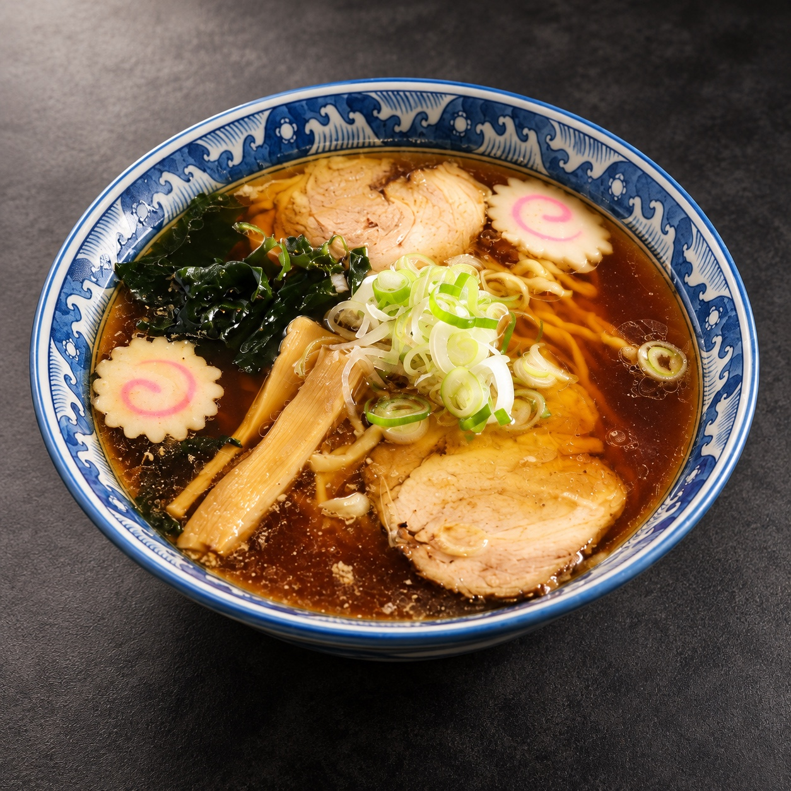
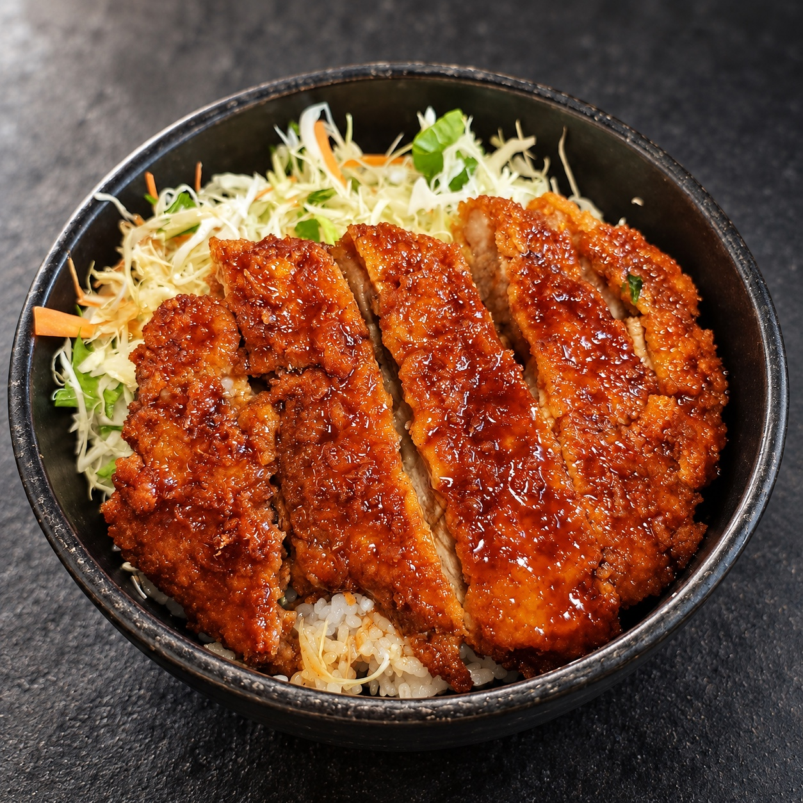
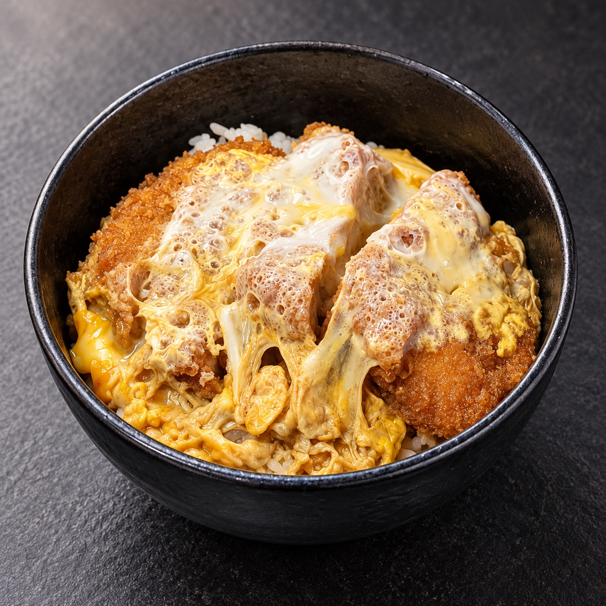
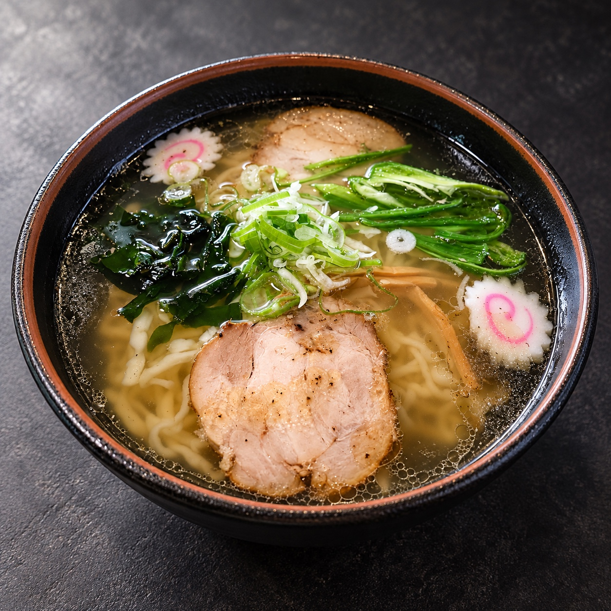
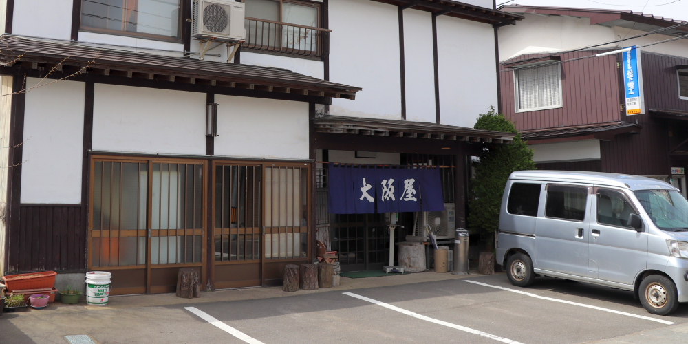
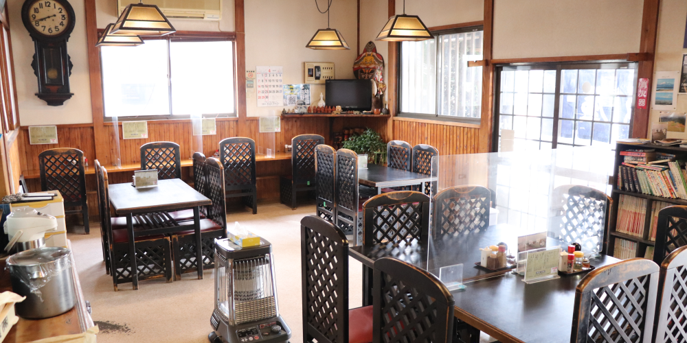
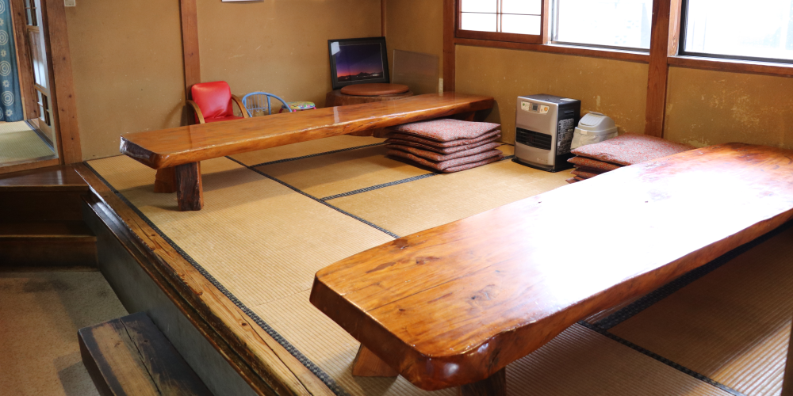

昭和四十二年創業
昭和42年創業。福島県郡山市湖南町福良にある、会津めん 大阪屋。
醤油、味噌、塩のラーメンに、チャーハン、カツ丼、カレー。今日の気分にしっくりくる一品を、どうぞ。

1,000円

700円

750円
850円
項目を押すとメニューが開きます。



カウンター・テーブル20席 ／ 座敷16席 ／ こども用椅子あり
投稿が表示されない場合は、公式インスタグラムをご覧ください。